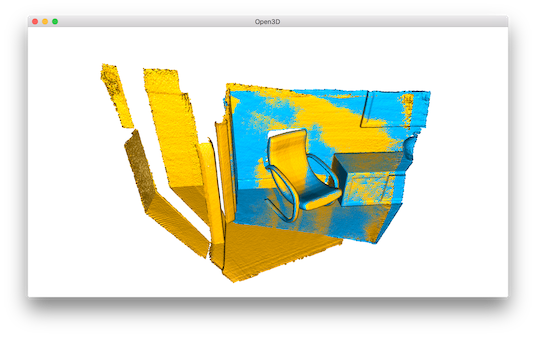

ICP registration¶
This tutorial demonstrates the ICP (Iterative Closest Point) registration algorithm. It has been a mainstay of geometric registration in both research and industry for many years. The input are two point clouds and an initial transformation that roughly aligns the source point cloud to the target point cloud. The output is a refined transformation that tightly aligns the two point clouds. A helper function draw_registration_result visualizes the alignment during the registration process. In this tutorial, we show two ICP variants, the point-to-point ICP and the point-to-plane ICP [Rusinkiewicz2001].
5 6 7 8 9 10 11 12 13 14 15 16 17 18 19 20 21 22 23 24 25 26 27 28 29 30 31 32 33 34 35 36 37 38 39 40 41 42 43 44 45 46 47 48 49 50 51 52 | # examples/Python/Basic/icp_registration.py
import open3d as o3d
import numpy as np
import copy
def draw_registration_result(source, target, transformation):
source_temp = copy.deepcopy(source)
target_temp = copy.deepcopy(target)
source_temp.paint_uniform_color([1, 0.706, 0])
target_temp.paint_uniform_color([0, 0.651, 0.929])
source_temp.transform(transformation)
o3d.visualization.draw_geometries([source_temp, target_temp])
if __name__ == "__main__":
source = o3d.io.read_point_cloud("../../TestData/ICP/cloud_bin_0.pcd")
target = o3d.io.read_point_cloud("../../TestData/ICP/cloud_bin_1.pcd")
threshold = 0.02
trans_init = np.asarray([[0.862, 0.011, -0.507, 0.5],
[-0.139, 0.967, -0.215, 0.7],
[0.487, 0.255, 0.835, -1.4], [0.0, 0.0, 0.0, 1.0]])
draw_registration_result(source, target, trans_init)
print("Initial alignment")
evaluation = o3d.registration.evaluate_registration(source, target,
threshold, trans_init)
print(evaluation)
print("Apply point-to-point ICP")
reg_p2p = o3d.registration.registration_icp(
source, target, threshold, trans_init,
o3d.registration.TransformationEstimationPointToPoint())
print(reg_p2p)
print("Transformation is:")
print(reg_p2p.transformation)
print("")
draw_registration_result(source, target, reg_p2p.transformation)
print("Apply point-to-plane ICP")
reg_p2l = o3d.registration.registration_icp(
source, target, threshold, trans_init,
o3d.registration.TransformationEstimationPointToPlane())
print(reg_p2l)
print("Transformation is:")
print(reg_p2l.transformation)
print("")
draw_registration_result(source, target, reg_p2l.transformation)
|
Helper visualization function¶
12 13 14 15 16 17 18 | def draw_registration_result(source, target, transformation):
source_temp = copy.deepcopy(source)
target_temp = copy.deepcopy(target)
source_temp.paint_uniform_color([1, 0.706, 0])
target_temp.paint_uniform_color([0, 0.651, 0.929])
source_temp.transform(transformation)
o3d.visualization.draw_geometries([source_temp, target_temp])
|
This function visualizes a target point cloud, and a source point cloud transformed with an alignment transformation. The target point cloud and the source point cloud are painted with cyan and yellow colors respectively. The more and tighter the two point clouds overlap with each other, the better the alignment result is.
Note
Since functions transform and paint_uniform_color change the point cloud, we call copy.deepcopy to make copies and protect the original point clouds.
Input¶
22 23 24 25 26 27 28 | source = o3d.io.read_point_cloud("../../TestData/ICP/cloud_bin_0.pcd")
target = o3d.io.read_point_cloud("../../TestData/ICP/cloud_bin_1.pcd")
threshold = 0.02
trans_init = np.asarray([[0.862, 0.011, -0.507, 0.5],
[-0.139, 0.967, -0.215, 0.7],
[0.487, 0.255, 0.835, -1.4], [0.0, 0.0, 0.0, 1.0]])
draw_registration_result(source, target, trans_init)
|
This script reads a source point cloud and a target point cloud from two files. A rough transformation is given.
Note
The initial alignment is usually obtained by a global registration algorithm. See Global registration for examples.
{kind=link}
29 30 31 32 | print("Initial alignment")
evaluation = o3d.registration.evaluate_registration(source, target,
threshold, trans_init)
print(evaluation)
|
Function evaluate_registration calculates two main metrics. fitness measures the overlapping area (# of inlier correspondences / # of points in target). Higher the better. inlier_rmse measures the RMSE of all inlier correspondences. Lower the better.
Initial alignment
RegistrationResult with fitness = 0.174723, inlier_rmse = 0.011771,
and correspondence_set size of 34741
Access transformation to get result.
Point-to-point ICP¶
In general, the ICP algorithm iterates over two steps:
Find correspondence set \(\mathcal{K}=\{(\mathbf{p}, \mathbf{q})\}\) from target point cloud \(\mathbf{P}\), and source point cloud \(\mathbf{Q}\) transformed with current transformation matrix \(\mathbf{T}\).
Update the transformation \(\mathbf{T}\) by minimizing an objective function \(E(\mathbf{T})\) defined over the correspondence set \(\mathcal{K}\).
Different variants of ICP use different objective functions \(E(\mathbf{T})\) [BeslAndMcKay1992] [ChenAndMedioni1992] [Park2017].
We first show a point-to-point ICP algorithm [BeslAndMcKay1992] using an objective
34 35 36 37 38 39 40 41 42 | print("Apply point-to-point ICP")
reg_p2p = o3d.registration.registration_icp(
source, target, threshold, trans_init,
o3d.registration.TransformationEstimationPointToPoint())
print(reg_p2p)
print("Transformation is:")
print(reg_p2p.transformation)
print("")
draw_registration_result(source, target, reg_p2p.transformation)
|
Class TransformationEstimationPointToPoint provides functions to compute the residuals and Jacobian matrices of the point-to-point ICP objective. Function registration_icp takes it as a parameter and runs point-to-point ICP to obtain results.
{kind=link}
Apply point-to-point ICP
RegistrationResult with fitness = 0.372450, inlier_rmse = 0.007760,
and correspondence_set size of 74056
Access transformation to get result.
Transformation is:
[[ 0.83924644 0.01006041 -0.54390867 0.64639961]
[-0.15102344 0.96521988 -0.21491604 0.75166079]
[ 0.52191123 0.2616952 0.81146378 -1.50303533]
[ 0. 0. 0. 1. ]]
The fitness score increases from 0.174723 to 0.372450. The inlier_rmse reduces from 0.011771 to 0.007760. By default, registration_icp runs until convergence or reaches a maximum number of iterations (30 by default). It can be changed to allow more computation time and to improve the results further.
reg_p2p = registration_icp(source, target, threshold, trans_init,
TransformationEstimationPointToPoint(),
ICPConvergenceCriteria(max_iteration = 2000))
Outputs:
{kind=link}
Apply point-to-point ICP
RegistrationResult with fitness = 0.621123, inlier_rmse = 0.006583,
and correspondence_set size of 123501
Access transformation to get result.
Transformation is:
[[ 0.84024592 0.00687676 -0.54241281 0.6463702 ]
[-0.14819104 0.96517833 -0.21706206 0.81180074]
[ 0.52111439 0.26195134 0.81189372 -1.48346821]
[ 0. 0. 0. 1. ]]
The ICP algorithm took 144 iterations until convergence. The final alignment is tight. The fitness score improves to 0.621123. The inlier_rmse reduces to 0.006583.
Point-to-plane ICP¶
The point-to-plane ICP algorithm [ChenAndMedioni1992] uses a different objective function
where \(\mathbf{n}_{\mathbf{p}}\) is the normal of point \(\mathbf{p}\). [Rusinkiewicz2001] has shown that the point-to-plane ICP algorithm has a faster convergence speed than the point-to-point ICP algorithm.
44 45 46 47 48 49 50 51 52 | print("Apply point-to-plane ICP")
reg_p2l = o3d.registration.registration_icp(
source, target, threshold, trans_init,
o3d.registration.TransformationEstimationPointToPlane())
print(reg_p2l)
print("Transformation is:")
print(reg_p2l.transformation)
print("")
draw_registration_result(source, target, reg_p2l.transformation)
|
registration_icp is called with a different parameter TransformationEstimationPointToPlane. Internally, this class implements functions to compute the residuals and Jacobian matrices of the point-to-plane ICP objective.
Note
The point-to-plane ICP algorithm uses point normals. In this tutorial, we load normals from files. If normals are not given, they can be computed with Vertex normal estimation.
{kind=link}
Apply point-to-plane ICP
RegistrationResult with fitness = 0.620972, inlier_rmse = 0.006581,
and correspondence_set size of 123471
Access transformation to get result.
Transformation is:
[[ 0.84023324 0.00618369 -0.54244126 0.64720943]
[-0.14752342 0.96523919 -0.21724508 0.81018928]
[ 0.52132423 0.26174429 0.81182576 -1.48366001]
[ 0. 0. 0. 1. ]]
The point-to-plane ICP reaches tight alignment within 30 iterations (fitness 0.620972 and inlier_rmse 0.006581).